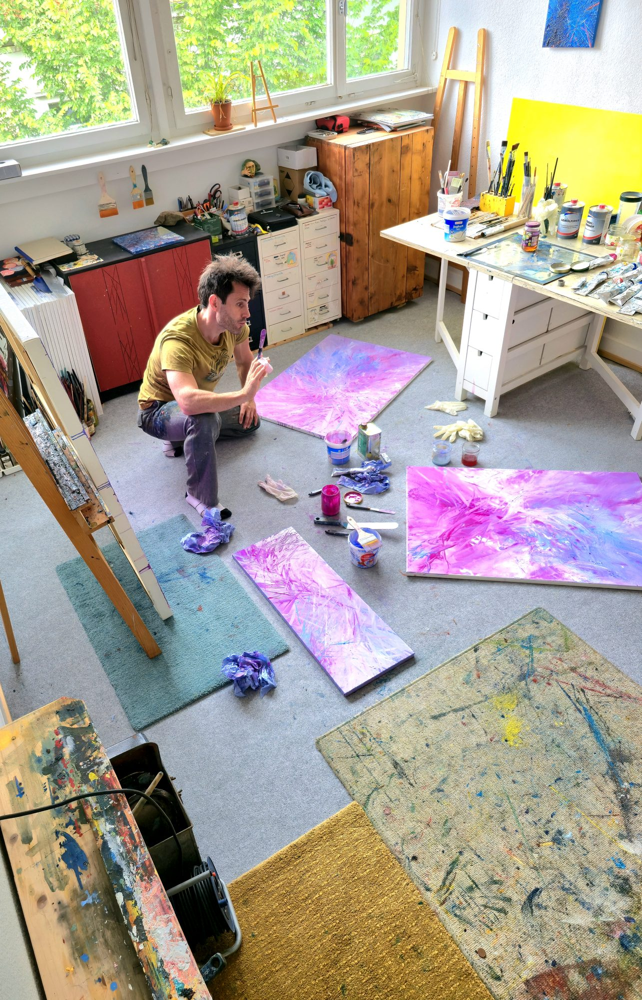

Atelier
Wo Leben und Kunst unzertrennlich verschmelzen. Das Atelier von Thorsten Weitz ist weit mehr als nur ein Schaffensort oder eine Werkstatt – es ist sein zentraler Lebensmittelpunkt. Hier gibt es keine Trennung zwischen Alltag und Malerei. Jeder Gedanke, jede Schwingung und die rohe Energie des täglichen Daseins fließen ohne Umwege und ungefiltert in den Entstehungsprozess mitein. In diesem Raum verdichtet sich die Haltung des Synthetischen Expressionismus: Die dynamische Wucht und Unberechenbarkeit des Lebens werden aufgefangen, reflektiert und in eine klare Form auf der Leinwand übersetzt. Das Leben im Atelier bedeutet ständige Bewegung, fokussierte Stille und das Schaffen einer spürbaren Präsenz in jedem einzelnen Werk. „Mein Atelier ist kein Ort, an den ich gehe, um zu arbeiten. Es ist der Raum, in dem ich lebe – und jede Leinwand ist das direkte Echo dieser Bewegung.“ — Thorsten Weitz Atelierbesuche für Sammler & Galeristen: Die Wirkung großformatiger Ölarbeiten entfaltet sich am stärksten dort, wo sie geboren werden. Sammler, Kunstliebhaber und Galeristen sind herzlich eingeladen, das Atelier nach vorheriger Terminvereinbarung zu besuchen, um die Werke in ihrem Ursprungsumfeld und im persönlichen Gespräch zu erleben.
Termin anfragen